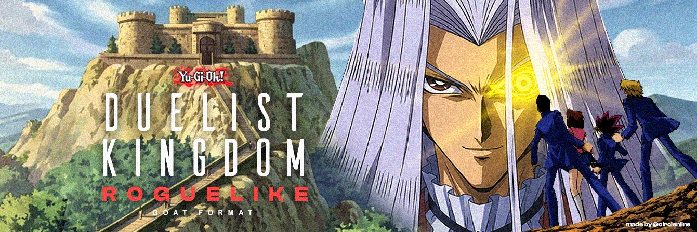
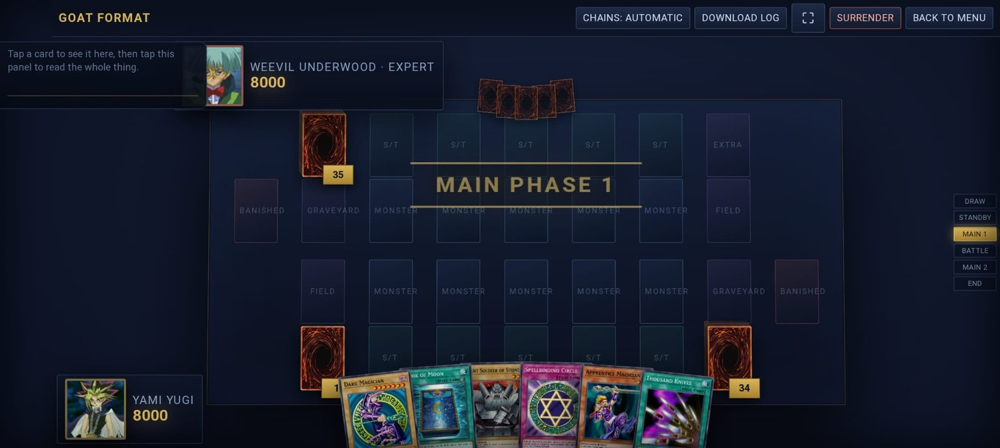
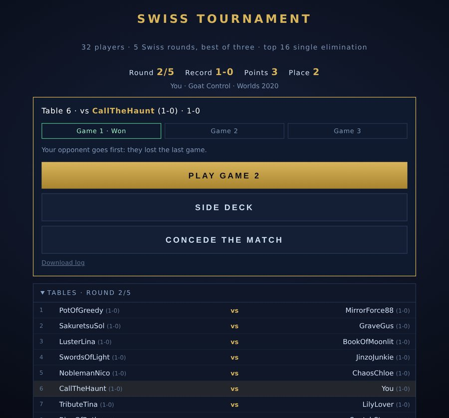
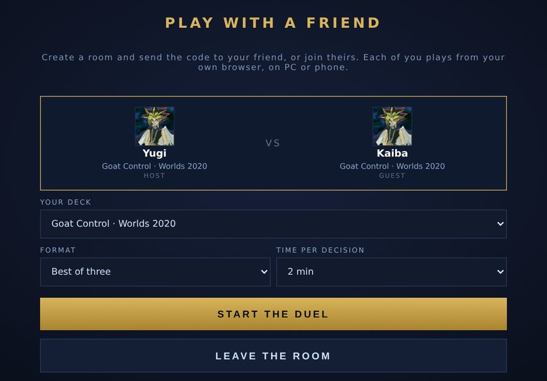

Yu‑Gi‑Oh! GOAT Format (April 2005) in your browser: a roguelike, Bo3 tournaments with side decking, and rooms to play your friends. Free, no install, no account.
▶ Play now Deck builder ⬇ Download
PC and phone (landscape) · English and Spanish
Build 1.0
A roguelike run across the island: Star Chips, a branching map, packs, encounters and Pegasus at the castle.
20 premade meta decks ready to play, or your own, against four bot difficulties.
32 players, 5 Swiss rounds and a top 16 cut, with side decking between games.
Your own decks, Bo1 or Bo3 with side decking, each player from their own browser.
To be a fun and challenging single-player game for new players and especially for experienced ones, and a way to play GOAT meta decks against a machine or against friends with everything automated: train for locals or tournament brackets without the manual interaction of Dueling Book.
The rules aren't hand-written. It runs ocgcore, the engine EDOPro uses, compiled to WebAssembly and started in GOAT mode, with 2005 priority for cards like Black Luster Soldier, Chaos Sorcerer, Tribe-Infecting Virus and Breaker.

The bot sees only what a player would see, has a plan for each of the 20 meta decks, simulates its options before playing, and is guided by a bank of over 100 meta plays taken from real tournament replays and from misplays players reported. Found a bad play? The Report button in the game sends it straight to the GitHub page with the duel log.

Create a room and send the code or the link. Browsers connect directly to each other, and the host's browser runs the duel and sends each player only what they're allowed to see. It works from this page and from a downloaded copy, on PC or phone, and you can mix them. Both players need an internet connection and the same version.

Your decks, runs and tournaments are saved in your own browser, on your own device. Nothing goes to a server. Use Options → Your data → Save backup to keep a copy or move it to another device.
Download the zip, unzip it and open
goat-simulador.html by double-clicking. Everything travels inside the file
except the card artwork, which is loaded from the internet; offline you still play.